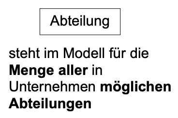

Entität: Objekt, Gegenstand aus dem zu modellierenden Aufgabenbereich
Jede Entität hat eine eindeutige Identität, verschieden von allen anderen
Entitätstypen: Zusammenfassung von Objekten, die im Modell als gleichartig angesehen werden, z. B. Angestellte, Abteilung, Manager
Alle Entitäten, die “gleichartig” in ihren Eigenschaften und ihrem Verhalten sind, werden zu Entitätstypen zusammengefasst.

tldr;
Eine Entität repräsentiert eine konkrete Instanz oder ein konkretes Objekt.
Ein Entitätstyp ist eine abstrakte Klasse oder eine allgemeine Gruppierung von Entitäten.
Beispiel: Entitätstyp: "Auto"
Entitäten: Ein bestimmtes Auto mit einer eindeutigen Fahrzeugidentifikationsnummer (FIN) oder einer bestimmten Marke und Modell.
Attribute: Beschreiben Eigenschaften von Entitäten.
Der Wertebereich eines Attributes kann explizit angegeben sein, z.B. int für Gehalt, oder er wird passend angenommen.